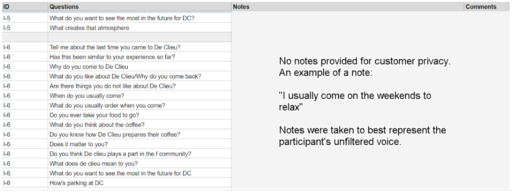

Here's an interview on how we conducted our interviews.
What were some of the original goals and motivations for this phase of the project?
Josh: As this is a user-centric project, I wanted to ensure that we were getting our data from the right sources. I made it a critical requirement for us to engage in an extended research sprint encompassing planning, interviews, and online review collection. This was communicated very early to our full team as the results of this phase will go on to directly determine a more concrete scope and requirements list once we move into contextual analysis.
Zoey: First of all, uncovering user pain points and mapping out current user experiences are one of the most exciting phases of a UX design life cycle. Not only do we learn all about our client’s downfalls (not in a sadistic way), but with user feedback, we can also discover product weaknesses that can be turned into opportunities and strengths that can be further developed into trademarks. Furthermore, we aimed to understand coffee shop customers’ experience to provide a more concrete form to the project goals and future design guidelines.
Coming in blind to the project and never having visited De Clieu, my personal goal for this phase was to learn about how De Clieu’s customers and its staff members view the café, what it means to them and how they want it improved.
How did you plan and prepare for the interviews?
Josh: After identifying stakeholders during our initial discussions with help from both the business owner and our systems engineer Austin, we were able to target three primary groups: customers, employees, and community planners. The bulk of the interview process would be focused around customers, so I wanted to ensure we would be able to secure an appropriate amount of in-person interviews. Zoey contributed heavily here and was able to take lead in identifying achievable targets for us to shoot for. In regards to the actual physical preparation for the interviews, I started by outlining metadata we wanted to capture on a google doc. This included fields such as interview ID, date, level of technology, user types, etc. Zoey was able to refine this and provide her professional validation- she can explain how her head works here in her answer. After determining the metadata, we translated the fields into a header on an excel document. My original method of doing so was unwieldy when it came to the actual data collection, but Zoey was able to advise there and provided a better solution that would prevent future headaches.
Zoey: To fully capture a work domain, a large, diverse pool of interviewees is required to ensure the participants represent our target population (industry standard of 30 participants). However, with project limitations due to funding, time, and the informal nature of guerilla interviews, target sample size had to be minimized without sacrificing the integrity of a user research or compromising the quality user data. Since our project focused on finding trends within a specific experience, a coffee shop (e.g., staff, interior design) and its products (e.g., coffee, food, website), I wondered if I can apply the magic number 5 from usability studies. And most importantly, we were going to build a work activity affinity diagram (WAAD) to analyze the results (not an analysis tool you would use for a large sample study).
Don Norman stated 5 users can reveal about 85% of the usability issues in products under usability testing. But, because problem discoverability can vary by various factors such as expert user versus novice user and target population heterogeneity, I asked the below questions before I decided on our target sample size.
- Is the work domain complicated?
Answer: No, anyone who goes to cafes are qualified for the study. - Does the product need experts?
Answer: No, we do not need coffee experts to assess coffee shop customers’ experience. - Is there going to be follow-up usability tests? In other words, is the project committed to an iterative design procedure?
Answer: Yes, the design concepts and prototypes will be expert and user evaluated to assure established design principles are met and user feedbacks are acknowledge and addressed. - What is the risk level of missing data?
Answer: Low, we are not designing an infotainment system for drivers or a chainsaw for lumberjacks. Nonetheless, missing data will be addressed by iterative design evaluations. - Do you have a digital tool to analyze the collected user data?
Answer: No, a work activity affinity diagram (WAAD) will be conducted by the stakeholders of the project.
Based on the answers above, I saw it appropriate to follow the magic number 5. But to make sure diversity of the target population is addressed, we targeted at least five participants per each user group: De Clieu’s regular customers, new customers at De Clieu and regular cafe customers without De Clieu experience.
In the following questions, I will elaborate on how the interview note-taking guide was set up to facilitate interviews and aid post-processing phase.
How did you conduct the actual interview?
Josh: Yea, this was the hard part. Zoey and I actually did interviews together in the past as an intern/research assistant team back at Virginia Tech, but this was a completely different scenario as we were both without backup (Zoey being in Ohio and myself being in Virginia). Zoey conducted interviews to users completely unfamiliar with De Clieu while I targeted both regular and new customers at the cafe. Everything leading up to the interviews went well for the most part though. I coordinated with Jazzii, the lead barista and our field expert on the project, to set up “interview days” where I would sit in the back of the cafe. If a regular customer came in, she would ask them if they had 15-20 minutes for an interview in exchange for a free drink. These went the most smoothly as Jazzii was great at getting a good amount of people to come to my back-seat “desk” for the interviews.
However, I didn’t want to just receive regular customers for my data, so I decided to conduct guerilla interviews on my own as well. If there was a period of inactivity between the more planned interviews Jazzii was coordinating, I would get up, close my eyes, choose a random direction, and approach whoever was there for an interview. The initial conversations were stressful, but I got used to casually approaching strangers after a couple of awkward runs. To start, I would greet the customer and stuck to a flexible, but planned script. I asked them how their day was going, explained the purpose of the interview, and proceeded to tell them the following points.
- This interview is to help provide information to my team and I create a better website and digital experience for De Clieu. Please consider me as a third party!
- Although this is an interview, you can treat this more as a conversation. There are no wrong or right answers, all I want to know is whatever you have on your head.
- If you feel uncomfortable with any questions, please let me know and we can skip over them. I want to respect your privacy first and foremost. None of these will be shared publicly outside of our team.
- Unfortunately my partner who is supposed to be here taking notes is in Ohio at the moment, so please feel free to drink your coffee if I am ever catching up with your answers. (Obviously Zoey wasn’t there ever to help in person, but I found it important to give an explanation to the user for any possible future gaps in the interviewing experience.)
(Due to the sheer volume of interviews and the lack of post-processing time, I decided not to record. I strongly believe steering away from more technology here was the right decision as it can put more unneeded pressure on the participants.)
I then proceeded to ask them pre-conceived questions that Zoey and I prepared. In figure A1, you can see four columns. ID (user’s ID number which can be traced to a separate sheet with user information), Questions, Notes (live notes from the interview), and Comments (any additional items to note i.e. physical behavior, mood, etc).
Figure A1
While we had questions already planned ahead of time, we also asked additional ad-hoc questions based on the flow of the conversation. For example, if a user replied by saying “I enjoy coming to De-Clieu for the atmosphere), I would often follow that up with a question asking “Could you explain to me what makes that atmosphere?”
Zoey: Since I’m not based in D.C., I decided to help remotely by interviewing my friends, who represent regular customers without De Clieu experience. I conducted two phone interviews with graduate students from two different universities and one in-person interview with a design researcher in Columbus, OH. The interviews ranged between 15 mins – 30 mins. I used the questions for new customers and used the note-taking on Google Sheets to document my notes.
Some tips for moderation:
- Make the interview a conversation not an interrogation. Users are sensitive. They do not like to be tested, be wrong or look stupid, so they may question the moderators to defend their perspectives, or lie to look smart and be agreeable with the moderators. To avoid defensive or biased user feedback, moderators must establish rapport in the beginning of the interview and set correct expectations that the interview is not to judge or test them but to learn more about their experience.
Moderators should continue with a friendly tone to open up the interview into a conversation. However, being overly friendly can give off the wrong impression (e.g., creepy, unprofessional) or appear too positive and agreeable, which can influence interviewees’ attitude. Moderators must stay neutral and professional.
- Echo user statements. Repeat users’ answers or last phrases to 1. clarify their responses have been correctly understood, make sure no words are added to make suggestions, 2. Probe on their responses without leading them in any way.
Bad
Participant: I would use the Information button to find more about stuff?
Moderator: Are you trying to find more information about how to use the audio feature?Recommended
Participant: I would use the Information button to find more about stuff?
Moderator: Use the Information button to find more about?
- Boomerang their questions to prevent leading questions. Users do not like to be seen wrong or clueless so they ask the moderator how the product works or ask if their assumptions are correct. You can not succumb to this. Do not explain how the product really works or if they are correct. Based on your answers, users’ opinion may change or affect their attitude for the rest of the interview. So, counterattack with a question of your own.
Bad
Participant: Do I have to view this item’s page to check-out?
Moderator: Yes, that is how it works. How did you know?Recommended
Do I have to view this item’s page to check-out?
Moderator: How would you expect to check-out?
- Ask qualitative questions. Phrase your key questions and probing questions that can get you a why behind what, not a yes or no question. Yes or no questions can also be leading questions.
Bad
Participant: This color is odd.
Moderator: Do you not like the odd color?
Participant: Yes.Recommended
Participant: This color is odd.
Moderator: What makes that color odd?
Were there any roadblocks or barriers to the original plan?
Josh: Yes, lots. I was no interview expert going into this, so everything was a little awkward in the beginning. Since I spent a good chunk of my corporate experience in the latter stages of the UX wheel mostly in contextual analysis and wireframing phases, this was an invaluable opportunity for me to put my book knowledge to a practical test. The first and most glaring roadblock was trying to approach people for non-regular customer interviews. It’s tough walking up to someone reading a book enjoying their time and asking, “Hey man, what’s up? Do you have time for like a 15 minute interview to help create a better experience for you at De Clieu?” only to hear a “uhh, nah.” In context of the actual interview itself though, adapting to asking questions, maintaining eye contact, and taking notes was a deep dive into a stress tank. By the third interview, however, I managed to get a better grip on it and things continued to become easier through more iterations. Through this I’ve gained a much better appreciation towards having a team of two for interviews; I feel we may have missed out on a good amount of additional data due to having only one person focusing on the interview participant. I also had some limitations in regards to the time periods I could conduct the interviews as I worked around my full-time job. The data would have been more properly representative of the customer base if the interviews took place during the weekdays instead of only the weekends.
Zoey: As expected, the research phase was not given enough breathing room. Because we needed input from multiple project stakeholders to formulate questions that would satisfy all our needs, more time was needed for preparation. Moreover, since the interviews were conducted in a guerilla style without a formal recruitment period, and I had to match my friends’ schedule, it took extra time to meet our target user interviews (15). However, pushing back our deadline gave us more time to go over the interviews and really get a grasp of the project and the work domain we are working in. Sometimes, of course with some limitations, stepping back and giving some breathing room to the research timeframe can result to a more effective research phase, which results in high-quality data.
How did you collect online reviews for data? Why did you decide to include online reviews?
Josh: Online reviews tend to be significantly more unfiltered. Part of the reasoning why we interviewed employees was to pick up items of criticism that wouldn’t typically be shared by the customers themselves in an interview environment. To extend the reach on this idea, I decided to collect online reviews from within the last year that had a description along with a rating from both Yelp and Google Reviews.
Figure A2 (reviews are public online)
I then split the description part of the reviews into two categories: positive and negative. This will help later on when we convert these into work activity notes for the WAAD.
What was the post-processing of the data like (e.g., tools used)?
Josh: Post-processing was all done by hand within google sheets. We duplicated the raw interview notes, then split them up into individual work activity notes each with a reference ID to their source data. This notably caused for a substantially longer spreadsheet as one raw interview note could often contain upwards of 3-4 individual work activity notes. Next steps will be printing the work activity notes for use in our WAAD. I’m looking forward to cutting them all out...
Zoey: To be honest, post-processing is a pain. 1. You have so much data you don’t know what to do with it, 2. data is not collected appropriately, doubling the processing time to convert raw data, and 3. You just hate yourself sitting in front of the computer reading all those words, words, words. In any shape or form, data processing is a tedious process and painful when data collection is not done properly. One way to reduce the pain is to take notes in digital form so you don’t have to convert physical notes (i.e., pen and paper) into digital notes. Secondly, link your data (i.e., notes) to as many filters or categorization of data as possible (e.g., question types, task types). For example, on excel, provide one or two columns for the categories, one column for participant ID, and one for the notes/data. If a rating scale is used, providing a column to differentiate rating questions and probes or key questions will shorten the post-processing time needed to separate the two notes. In the end, you have one row of information that contains everything you need to understand: where the note came from, who said it, and why. When filtering the notes during analysis, you can easily filter the notes by the categories you labeled each data. Lastly, if possible, have a digital analysis tool that can help you find patterns quickly and efficiently.
Any final thoughts or lessons learned?
Josh: On top of what I covered in the roadblocks question, I definitely learned the value of the contextual inquiry process and the amount of effort required to make it work. Eighteen interviews may not seem to be that much, but these span fifteen to thirty minutes each ultimately covering a length of around seven to nine hours combined. This combined with scheduling the interviews, maintaining engagement intensity, and processing all the raw data into work activity notes can be challenging- but also incredibly fun. I’ve learned that while there are many rejections that come along with guerilla interviews, people tend to genuinely be interested in helping out and enjoy voicing their opinions. Overall, I’m very satisfied with what we were able to uncover during this contextual inquiry phase. A good amount of that credit belongs to Zoey; she’s been able to keep our UX tight and on focus.
On a side note, I want to thank all the participants! Hopefully you all enjoyed your free coffee (or for employees, fiery hot cheetos) as a small token of thanks.
 thank you cheetos
thank you cheetos
Zoey: Working in the UX industry, you don’t get to apply much of the things you learned in school. I quickly learned that things we study in school are applied in an ideal world scenario. In reality, UX teams are bombarded with low funding, short timeline, client’s business and technical requirements, and politics. For this research phase, although we did meet some budget limitations, we were able to be flexible with our options and provide alternative solutions. Also, the whole team, including the developers, designers, and clients, came together as a group to help out the research process, which is very rare. Lastly, kudos to Josh for pulling it all together.